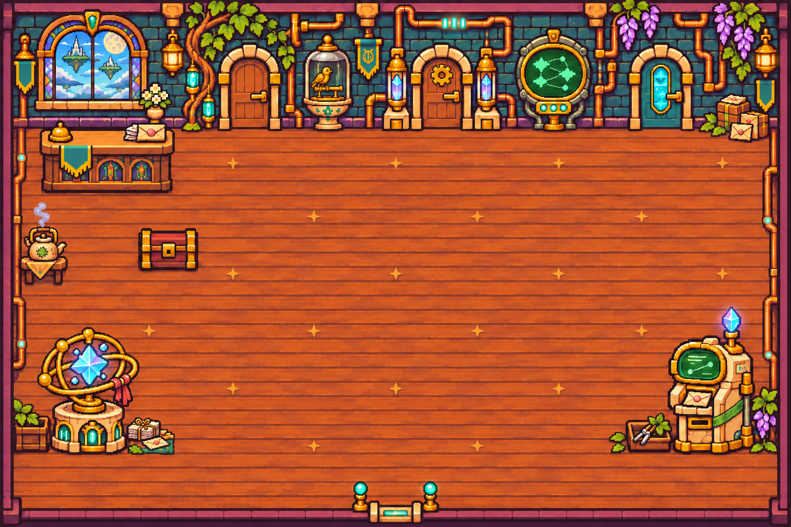

Choose notes, then play the key.
0 notes
Progress saves on this device.
Your carried notes are saved. Revisit this choice to explore another answer with the notes you spent restored.
Approach the returned mail, terminals, and relics to inspect them. Observations stay in your journal across runs.
Walk with arrows or WASD. Click/tap the floor to choose a destination; click a person, chest, or door to walk over and interact. E or Space interacts nearby. I opens your notes.
Nell, Iris, and Pip travel with you and can be approached in every room. Ask them about their story, the route, or your notes. They offer gifts only at particular stops, once per run. Talk to Nell in the depot for eight note types and open the chest for the missing half note. Each source can be collected once. Iris and Pip offer notes in their rooms; Oren’s delivery chest holds the canal phrase.
Approach a door to open its rhythm puzzle. Hear its lock, arrange the exact ordered rhythm key, then open the door. Wrong rhythms spend nothing. Tap a placed note or use Undo to edit freely.
Pause with Escape or the settings icon to see your journey. The chart remembers places and connections you have travelled across runs. Read clues are kept in the journal. Starting over resets your satchel and pickups while keeping discoveries.
Rests sound as silence. The number keys 1–9 add notes while solving a lock; Backspace undoes. Escape closes a panel or opens the menu. No one is timing you.
This release contains the depot, garden porch, bird workshop, and canal storehouse. The forward gates lead to continuation previews; warning gates reveal dead ends. Revisit the depot at the south threshold to rewind a branch choice. Notes and discoveries save on this device; later rooms are planned to use every note by each successful ending.